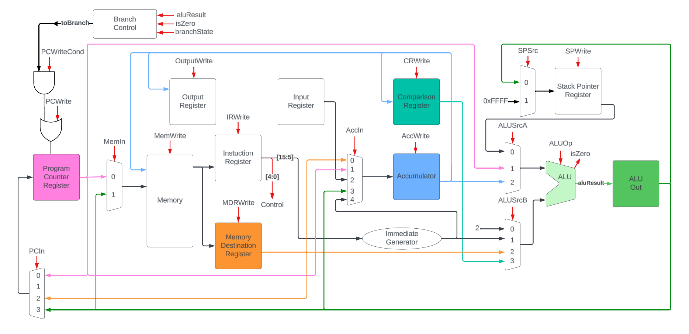
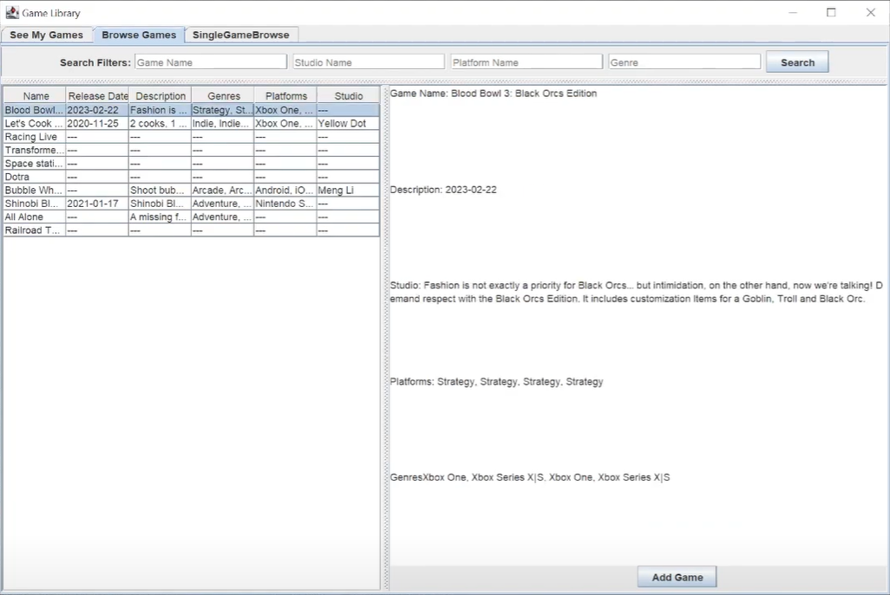
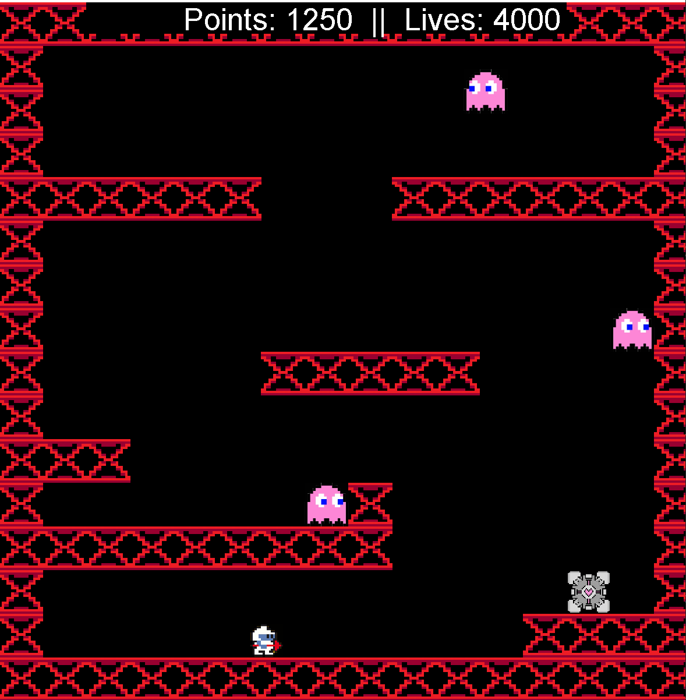
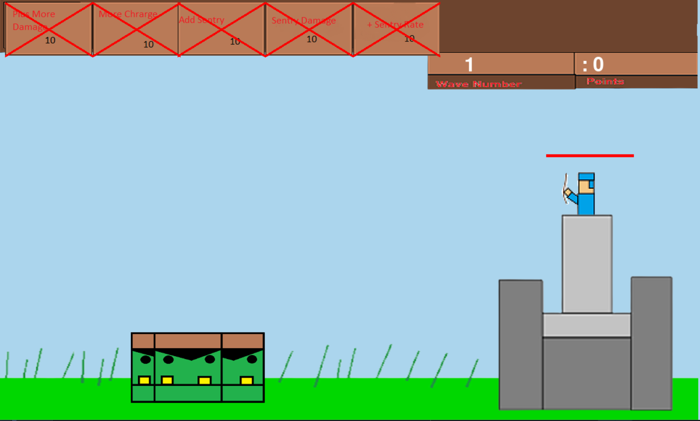

Portfolio
-
RISC-A Processor
A multi-cycle accumulator-based processor design made to find relative primes using Euler's algorithm. Implemented and tested using Verilog.
-
Game Library Database
A T-SQL Database that allows users to track the games they own. Also allows users to leaves notes and reviews on games.
-
Joust
A recreation of the arcade game Joust in Java. Includes a custom levels, enemies, and a level editor.
-
Archery Game
A 2D shooter game developed in Python. Utilizies the Pygame library.